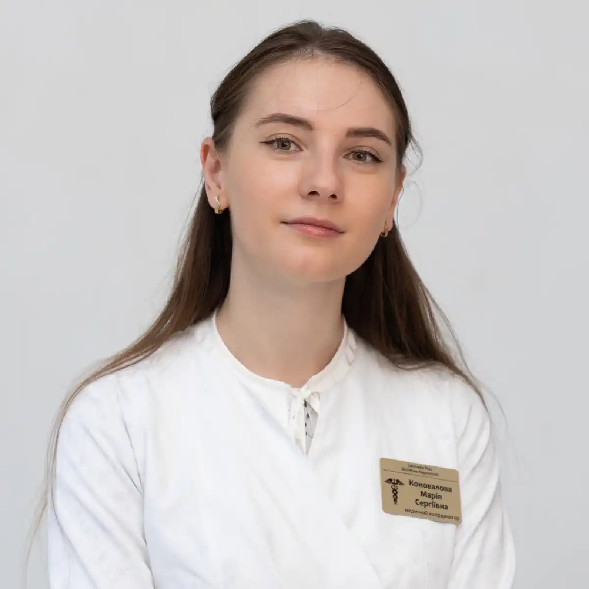

+38(068) 79 72 782
+38(068) 79 72 782Лікування жіночого алкоголізму у Запоріжжі
Шлях до тверезості починається з першого кроку


Безкоштовна консультація, працюємо цілодобово 24/7
Шлях до тверезості починається з першого кроку

Жіночий алкоголізм — це серйозне хронічне захворювання, яке потребує професійного і делікатного підходу до лікування. Останніми роками проблема алкогольної залежності серед жінок стає дедалі актуальнішою. Регулярне вживання спиртних напоїв поступово призводить до формування стійкої залежності, яка негативно впливає не лише на фізичне здоров’я, а й на психоемоційний стан, соціальне життя та стосунки з близькими людьми.
Алкоголь чинить виражений токсичний вплив на організм жінки. При тривалому вживанні можуть страждати печінка, серцево-судинна система, нервова система і гормональний фон. Крім того, залежність часто супроводжується емоційними проблемами, тривожністю, депресивними станами та зниженням якості життя. Поступово алкоголь починає займати дедалі більше місця в житті людини, витісняючи роботу, сім’ю і звичні інтереси.
Лікування жіночого алкоголізму в Запоріжжі потребує комплексного та індивідуального підходу. Сучасна наркологія розглядає залежність не як шкідливу звичку, а як захворювання, яке зачіпає фізіологічні, психологічні та соціальні аспекти життя людини. Саме тому ефективна терапія включає кілька етапів: детоксикацію організму, медикаментозну підтримку, психологічну допомогу та подальшу реабілітацію.
На першому етапі проводиться очищення організму від токсичних продуктів розпаду алкоголю. Детоксикаційна терапія допомагає знизити рівень інтоксикації, відновити водно-електролітний баланс і стабілізувати загальний стан пацієнта. Після цього призначається медикаментозна підтримка, спрямована на відновлення роботи внутрішніх органів і зниження тяги до алкоголю. Головною частиною лікування є психологічна допомога. Робота з психологом допомагає виявити причини формування залежності, навчитися справлятися зі стресом без уживання алкоголю та сформувати стійку мотивацію до тверезого способу життя. Реабілітаційний етап допомагає закріпити результати лікування і знизити ризик повторних зривів.
Жіночий алкоголізм має низку особливостей, які відрізняють його від чоловічої залежності. Жіночий організм більш чутливий до впливу алкоголю, тому формування залежності може відбуватися швидше навіть при вживанні менших доз спиртного. Це пов’язано з фізіологічними особливостями організму, зокрема з меншою кількістю ферментів, що беруть участь у переробці етанолу, а також з меншою масою тіла і меншим вмістом води в організмі.
У результаті алкоголь довше затримується в крові і чинить більш виражений токсичний вплив на внутрішні органи. При регулярному вживанні спиртного швидше розвиваються порушення роботи печінки, серцево-судинної системи, нервової системи та обмінних процесів. Крім того, алкоголь може чинити негативний вплив на гормональний фон і загальний стан здоров’я жінки.
Ще однією особливістю є те, що жінки частіше намагаються приховувати проблему залежності. Багато хто намагається не демонструвати свій стан оточуючим, уживає алкоголь наодинці та уникає обговорення цієї теми з близькими. Це може призводити до того, що залежність тривалий час залишається непомітною для сім’ї та друзів. У результаті звернення за медичною допомогою часто відбувається вже на більш пізніх стадіях захворювання, коли залежність стає вираженою і супроводжується серйозними наслідками для здоров’я. Саме тому при появі перших ознак проблеми важливо своєчасно звернутися за професійною допомогою, щоб зупинити розвиток залежності і розпочати лікування.
Причини розвитку алкогольної залежності у жінок можуть бути різними. У більшості випадків формування залежності відбувається під впливом психологічних, соціальних та емоційних факторів. Жінки частіше переживають внутрішні переживання і стрес більш емоційно, тому інколи алкоголь починає сприйматися як спосіб тимчасово знизити напруження або покращити настрій.
На початкових етапах уживання спиртного може мати епізодичний характер — наприклад, під час відпочинку, зустрічей із друзями або після важкого робочого дня. Однак з часом алкоголь може почати використовуватися як засіб для зняття емоційного напруження, боротьби зі стресом або втечі від життєвих труднощів. Поступово формується звичка, яка з часом може перерости у стійку залежність. До основних причин розвитку алкогольної залежності у жінок належать:
З часом уживання алкоголю стає звичним способом справлятися з життєвими труднощами. Однак таке «рішення» лише тимчасово знімає напруження і поступово призводить до формування психологічної, а потім і фізичної залежності. Саме тому при появі ознак регулярного вживання спиртних напоїв важливо своєчасно звернути увагу на проблему і за потреби звернутися за професійною допомогою.
На ранніх етапах ознаки залежності можуть бути малопомітними і часто сприймаються як тимчасове явище або «втома». Однак з часом уживання алкоголю стає більш регулярним, а симптоми — більш вираженими. Поступово формується стійка залежність, яка починає впливати як на фізичний, так і на психоемоційний стан жінки. Алкоголь починає займати дедалі важливіше місце в житті, знижуючи інтерес до роботи, сім’ї та звичних занять. При цьому сама жінка може заперечувати наявність проблеми або намагатися приховувати вживання спиртного від оточуючих, що ускладнює своєчасне виявлення захворювання. Основні симптоми жіночого алкоголізму:
З часом симптоми посилюються, а періоди тверезості стають дедалі коротшими. У деяких випадках можуть виникати запої, при яких уживання алкоголю триває кілька днів поспіль. Цей стан супроводжується вираженою інтоксикацією і потребує медичної допомоги. Жіночий алкоголізм розвивається швидко і може тривалий час залишатися непомітним. Тому при появі навіть перших ознак залежності рекомендується не відкладати звернення до фахівця. Своєчасна діагностика і лікування дозволяють зупинити розвиток захворювання і зберегти здоров’я.
Жіночий організм по-іншому реагує на алкоголь. У жінок менше ферментів, що відповідають за переробку етанолу, тому алкоголь довше затримується в організмі і чинить більш виражений токсичний вплив на внутрішні органи. Навіть при вживанні порівняно невеликих доз спиртного навантаження на печінку, серце і нервову систему може бути значно вищим. Крім того, гормональні особливості, а також менша маса тіла і нижчий вміст води в організмі посилюють дію алкоголю. У результаті інтоксикація розвивається швидше, а залежність може формуватися у коротші строки порівняно з чоловіками. Це призводить до того, що ушкодження внутрішніх органів відбувається швидше, а наслідки вживання стають більш вираженими.
Алкоголь чинить негативний вплив не лише на фізичне здоров’я, а й на психоемоційний стан жінки. Можуть з’являтися перепади настрою, тривожність, дратівливість і ознаки депресивних станів. З часом такі зміни посилюються і стають частиною залежності. Саме тому жіночий алкоголізм потребує особливої уваги і своєчасного медичного втручання. Раннє звернення до фахівців дозволяє знизити токсичне навантаження на організм, запобігти розвитку серйозних ускладнень і розпочати ефективне лікування на ранніх етапах захворювання.
Одним із перших етапів лікування є зняття алкогольної інтоксикації. При регулярному вживанні спиртного в організмі накопичуються токсичні продукти розпаду етанолу, які негативно впливають на роботу внутрішніх органів і загальне самопочуття. Для безпечного та ефективного очищення організму застосовується інфузійна терапія — постановка крапельниці. Внутрішньовенне введення лікарських розчинів дозволяє швидко доставити необхідні речовини в кровотік, завдяки чому процес детоксикації проходить значно швидше, ніж при прийомі препаратів усередину. Крапельниця допомагає знизити токсичне навантаження на організм, відновити порушені процеси і стабілізувати стан пацієнта.
Крапельниця від інтоксикації допомагає: вивести токсичні продукти розпаду алкоголю, відновити водно-електролітний баланс, підтримати роботу печінки та серцево-судинної системи, зменшити прояви інтоксикації, покращити загальне самопочуття пацієнта. Після проведення процедури зменшується слабкість, минає нудота, знижується головний біль, нормалізується артеріальний тиск і стабілізується загальний стан організму. За потреби лікар може додатково призначити медикаментозну підтримку, яка прискорює відновлення і допомагає знизити ризик ускладнень.
Вартість лікування жіночого алкоголізму починається від 2199 грн.
Алкогольна залежність у жінок розвивається поступово і проходить кілька стадій, кожна з яких характеризується посиленням як психологічної, так і фізичної тяги до алкоголю. Розуміння цих етапів дозволяє своєчасно розпізнати проблему і звернутися за медичною допомогою, не допускаючи переходу захворювання у тяжку форму.
Чим раніше починається лікування, тим вища ймовірність зупинити розвиток захворювання і уникнути тяжких наслідків для здоров’я. Тому при появі перших ознак залежності важливо не відкладати звернення до фахівців. Своєчасна медична допомога дозволяє стабілізувати стан, знизити тягу до алкоголю і розпочати шлях до відновлення та тверезого життя.
Психологічні фактори відіграють ключову роль у розвитку жіночого алкоголізму. Багато жінок починають уживати алкоголь як спосіб упоратися зі стресом, емоційними переживаннями, тривогою або внутрішнім напруженням. В умовах постійного навантаження, сімейних обов’язків або особистих труднощів спиртне може сприйматися як швидкий спосіб розслабитися і відволіктися від проблем.
На перших етапах алкоголь дійсно може створювати відчуття полегшення, знижувати тривожність і покращувати настрій. Однак цей ефект має короткочасний характер. З часом організм звикає до такого способу «розрядки», і для досягнення попереднього стану потрібна дедалі більша кількість алкоголю. Поступово формується психологічна залежність, при якій жінка починає регулярно вдаватися до вживання спиртного у стресових ситуаціях.
Додаткову роль відіграють такі фактори, як депресивні стани, відчуття самотності, емоційне вигорання і низька стресостійкість. У деяких випадках алкоголь стає способом втечі від реальності або спробою впоратися з внутрішніми конфліктами. Це замикає так зване «порочне коло», при якому проблеми посилюються, а вживання алкоголю стає дедалі частішим. Саме тому в лікуванні жіночого алкоголізму велика увага приділяється психологічній допомозі. Робота з психологом допомагає виявити причини залежності, навчитися керувати емоціями, справлятися зі стресом без алкоголю і сформувати нові, здоровіші способи реагування на життєві труднощі.
Виведення із запою є важливим етапом лікування алкогольної залежності. Під час запою в організмі накопичуються токсичні продукти розпаду алкоголю, що призводить до вираженої інтоксикації та порушення роботи внутрішніх органів. Різке припинення вживання спиртного без медичної допомоги може супроводжуватися погіршенням стану, тому лікування має проводитися під наглядом лікаря.
Запійний стан часто супроводжується слабкістю, нудотою, блюванням, головним болем, стрибками артеріального тиску, прискореним серцебиттям, тривожністю та порушенням сну. У тяжчих випадках можуть виникати тремор рук, виражена дратівливість і психоемоційна нестабільність. Саме тому своєчасна медична допомога відіграє ключову роль у стабілізації стану пацієнта.
Для стабілізації стану застосовується інфузійна терапія. Постановка крапельниці допомагає знизити рівень токсинів, відновити водно-електролітний баланс і підтримати роботу внутрішніх органів. Внутрішньовенне введення препаратів дозволяє швидше досягти лікувального ефекту і полегшити стан пацієнта. Додатково лікар може призначити медикаментозну підтримку для нормалізації роботи нервової системи, стабілізації артеріального тиску та покращення сну. Комплексний підхід дозволяє безпечно вивести пацієнта зі стану запою, знизити прояви інтоксикації та прискорити відновлення організму.
Кодування від алкоголю є одним із методів протирецидивної терапії, який широко застосовується при лікуванні алкогольної залежності. Його основне завдання — сформувати стійку відмову від уживання алкоголю і значно знизити ризик повторних зривів. Кодування від алкоголізму проводиться після стабілізації стану пацієнта та етапу детоксикації, коли організм очищений від токсичних речовин і людина готова до подальшого лікування.
Кодування від алкоголізму не є самостійним методом терапії, а використовується як частина комплексного лікування. Найбільш виражений ефект досягається при поєднанні кодування з медикаментозною підтримкою, психологічною допомогою та етапом реабілітації. Такий підхід дозволяє не лише тимчасово відмовитися від алкоголю, а й закріпити результат на тривалий період. Існують різні методи кодування від алкоголю, які підбираються індивідуально з урахуванням стану пацієнта, стадії залежності, наявності супутніх захворювань і рівня мотивації.
Медикаментозне кодування від алкоголізму ґрунтується на застосуванні спеціальних препаратів. Одні з них блокують розщеплення алкоголю в організмі, викликаючи виражені неприємні реакції при його вживанні (нудота, слабкість, прискорене серцебиття), що формує стійке негативне ставлення до спиртного. Інші препарати спрямовані на зниження тяги до алкоголю і стабілізацію психоемоційного стану пацієнта. Такий метод допомагає утримуватися від уживання спиртного і знижує ймовірність зриву.
Психологічне кодування від алкоголю спрямоване на формування стійкої установки на тверезий спосіб життя. Під час процедури фахівець працює з психологічними установками пацієнта, посилює мотивацію до відмови від алкоголю і допомагає змінити ставлення до спиртних напоїв. Цей метод особливо ефективний у пацієнтів із високою внутрішньою мотивацією і готовністю до змін. У деяких випадках можуть застосовуватися комбіновані підходи, коли медикаментозне і психологічне кодування поєднуються для досягнення більш вираженого результату. Це дозволяє впливати як на фізіологічні механізми залежності, так і на психологічні причини її формування.
Ефективність кодування від алкоголізму значною мірою залежить від бажання пацієнта змінити спосіб життя і відмовитися від уживання спиртного. Важливу роль відіграє підтримка з боку фахівців і близьких людей, а також дотримання рекомендацій лікаря. При комплексному підході кодування від алкоголю допомагає значно підвищити шанси на тривалу ремісію, відновити здоров’я і повернутися до повноцінного життя без залежності.
Психологічна допомога відіграє ключову роль у лікуванні жіночого алкоголізму, оскільки залежність у жінок часто формується на тлі емоційних переживань, стресу та внутрішніх конфліктів. Робота з психологом допомагає пацієнтці не лише усвідомити наявність проблеми, а й глибше зрозуміти причини формування залежності, які могли бути пов’язані з життєвими труднощами, тривожністю, депресією або відчуттям самотності.
Під час психотерапії фахівець допомагає жінці навчитися справлятися зі стресом і емоційними навантаженнями без уживання алкоголю. Формуються нові, здоровіші способи реагування на складні життєві ситуації, що значно знижує ризик повернення до попереднього способу життя. Також важливим етапом є робота з установками і переконаннями, пов’язаними з алкоголем, що дозволяє змінити ставлення до спиртного.
Психотерапія сприяє відновленню емоційного стану, зниженню рівня тривожності та покращенню якості життя. Поступово у пацієнтки формується стійка мотивація до тверезого способу життя, з’являється впевненість у власних силах і здатність контролювати свою поведінку. У межах психологічної допомоги можуть використовуватися індивідуальні консультації, групові заняття, а також різні методи психотерапії, спрямовані на глибоке опрацювання причин залежності. Такий комплексний підхід допомагає не лише позбутися тяги до алкоголю, а й відновити внутрішню рівновагу, налагодити стосунки з близькими і повернутися до повноцінного життя без залежності.
Після проведення основного лікування важливим етапом є реабілітація. Вона спрямована на відновлення психологічного стану, зміцнення емоційної стійкості та поступову соціальну адаптацію. Саме на цьому етапі закріплюються результати лікування і формується основа для довготривалої тверезості. Під час реабілітації пацієнтка вчиться будувати життя без алкоголю, формувати нові здорові звички і повертатися до нормальної соціальної активності. Особлива увага приділяється навчанню навичкам керування стресом, контролю емоцій і виробленню стійких моделей поведінки, які допомагають справлятися з життєвими труднощами без уживання спиртного.
Реабілітація також включає відновлення стосунків із близькими, повернення до роботи або звичної діяльності, формування нових інтересів і життєвих цілей. Це допомагає жінці відчути впевненість у собі і знизити ризик повернення до попереднього способу життя. У процесі реабілітації можуть використовуватися індивідуальні та групові заняття, психологічна підтримка, а також програми соціальної адаптації. Такий комплексний підхід дозволяє не лише зберегти досягнутий результат, а й значно знизити ймовірність повторних зривів. Реабілітація відіграє ключову роль у лікуванні жіночого алкоголізму, оскільки допомагає пацієнтці не просто відмовитися від алкоголю, а повністю змінити спосіб життя і повернутися до повноцінного, здорового й активного життя.
У деяких випадках лікування жіночого алкоголізму може проводитися вдома. Такий формат допомоги особливо актуальний при необхідності термінового зняття алкогольної інтоксикації або виведення із запою. Лікування вдома дозволяє отримати кваліфіковану медичну допомогу в комфортних умовах, без необхідності відвідування клініки, що важливо при вираженій слабкості і поганому самопочутті.
Перед початком терапії лікар-нарколог проводить огляд пацієнтки, оцінює загальний стан організму, вимірює артеріальний тиск, частоту пульсу та рівень вираженості інтоксикації. Також враховуються тривалість уживання алкоголю, наявність хронічних захворювань та індивідуальні особливості організму. На підставі цих даних підбирається оптимальна і безпечна схема лікування.
Лікар призначає медикаментозну терапію і за потреби проводить інфузійну терапію — постановку крапельниці для детоксикації організму. Крапельниця допомагає вивести токсичні продукти розпаду алкоголю, відновити водно-електролітний баланс, підтримати роботу печінки, серця і нервової системи. Уже після процедури зменшуються симптоми інтоксикації, знижується слабкість, минає нудота і покращується загальне самопочуття. Лікування вдома проводиться під контролем фахівця, який стежить за реакцією організму і за потреби коригує терапію. Однак при тяжких формах алкогольної залежності, виражених ускладненнях або тривалих запоях може знадобитися лікування в стаціонарі, де забезпечується цілодобове медичне спостереження і більш інтенсивна терапія.
Для багатьох жінок важливим фактором при зверненні за медичною допомогою є конфіденційність лікування. Можливість анонімного лікування дозволяє звернутися до фахівців без страху розголосу, осуду з боку оточуючих або негативних наслідків для особистого і професійного життя. Це особливо важливо, оскільки багато пацієнток довго відкладають лікування саме через побоювання, пов’язані зі збереженням особистої інформації. Анонімне лікування створює безпечні умови, у яких жінка може відкрито говорити про свою проблему і отримувати необхідну допомогу без психологічного тиску. Такий підхід допомагає швидше ухвалити рішення про початок терапії і своєчасно зупинити розвиток залежності.
Уся інформація про пацієнта, стан здоров’я, проведені процедури і лікування залишається суворо конфіденційною і не передається третім особам. Дані не розголошуються роботодавцям, знайомим або іншим організаціям. Медичні фахівці дотримуються принципів лікарської таємниці й етики, що гарантує повний захист особистої інформації. Конфіденційність є важливою частиною лікування жіночого алкоголізму, оскільки вона сприяє своєчасному зверненню за допомогою і підвищує ефективність терапії. Чим раніше пацієнтка отримує кваліфіковану підтримку, тим вищі шанси на успішне відновлення і повернення до повноцінного життя без залежності.
Алкогольна залежність належить до хронічних захворювань, однак при комплексному і правильно організованому лікуванні можна досягти стійкої ремісії та повної відмови від уживання алкоголю. Незважаючи на те що залежність формується поступово і зачіпає як фізичний, так і психологічний стан людини, сучасні методи терапії дозволяють ефективно контролювати це захворювання і повертати пацієнта до тверезого способу життя.
Лікування алкоголізму — це не одноразова процедура, а послідовний процес, який включає кілька етапів. На першому етапі проводиться детоксикація організму, спрямована на виведення токсинів і стабілізацію стану. Далі застосовується медикаментозна підтримка, яка допомагає відновити роботу внутрішніх органів і знизити тягу до алкоголю. Не менш важливим елементом лікування є психологічна допомога. Робота з психологом або психотерапевтом дозволяє виявити причини залежності, навчитися справлятися зі стресом без уживання алкоголю і сформувати стійку мотивацію до тверезого способу життя. Це особливо важливо для запобігання повторним зривам.
Завершальним етапом є реабілітація, яка допомагає закріпити результат лікування, відновити емоційний стан і адаптуватися до життя без алкоголю. У цей період формуються нові звички, відновлюються соціальні зв’язки і повертається впевненість у собі. Комплексна терапія, що включає медичну допомогу, психологічну підтримку та етап реабілітації, дозволяє значно знизити ризик повторних зривів. При дотриманні рекомендацій фахівців і активній участі пацієнта можна досягти тривалої ремісії, відновити здоров’я і повернутися до повноцінного життя без алкогольної залежності.
Якщо ви або ваші близькі зіткнулися з проблемою алкогольної залежності, важливо своєчасно звернутися за професійною допомогою. Наркологічна клініка UmbrellaPlus у Запоріжжі пропонує комплексні програми лікування, що включають детоксикацію організму, медикаментозну терапію та психологічну підтримку.
Наркологи клініки проводять діагностику стану пацієнтки, допомагають зняти алкогольну інтоксикацію, безпечно вивести із запою і підібрати індивідуальну програму лікування залежності. Медична допомога надається анонімно, з дотриманням повної конфіденційності та з використанням сучасних методів терапії.
Телефон для консультації та виклику нарколога: +38(050-021-69-57)

Так, ми суворо дотримуємося повної конфіденційності на всіх етапах лікування. Інформація про пацієнта, діагноз та проходження терапії не передається третім особам. Звернення до нас не тягне за собою постановку на облік. Ви можете бути впевнені у безпеці та анонімності.
Програма лікування розробляється індивідуально після консультації з фахівцем. Враховуються вид залежності, її тривалість, фізичний та психологічний стан пацієнта. Такий підхід дозволяє підвищити ефективність терапії та знизити ризик зриву. Ми не використовуємо шаблонні рішення.
Так, ми супроводжуємо пацієнтів і після основного курсу лікування. Проводяться консультації, рекомендації щодо адаптації та профілактики рецидивів. За потреби можлива подальша психологічна підтримка. Це допомагає зберегти результат та повернутися до повноцінного життя.
Анонимно

Ну в хлопців просто золоті руки й світла голова, мене капали Олексій та Владислав, буквально за декілька сеансів я наче заново народився, до цього пив більше 3х тижнів, не міг зупинитись, дуже радий що знайшов саме цих спеціалістів, всім рекомендую
Анонимно
В течение нескольких лет я злоупотреблял алкоголь, что привело к увольнению с работы и вызвало у меня мысли о суициде. Понимая, что такой образ жизни неприемлем, я обратился за помощью в клинику “Амбрела”. Здесь я смог преодолеть свою зависимость от спиртного благодаря заботливым и опытным врачам, а также эффективной системе лечения. Спустя более года я полностью избавился от желания употреблять алкоголь, и теперь моя жизнь вернулась в норму. Я даже не приближаюсь к спиртному! Благодарю врачей клиники “Амбрела” за их помощь и заботу.
Анонимно
Я обращался за помощью в различные клиники, пытаясь избавиться от своей зависимости от алкоголя, но без особых успехов. Никак не мог справиться с желанием прибегнуть к бутылке, пока друг не посоветовал мне обратиться в центр “Амбрелла”. Я записался на прием и был поражен заботливым отношением к пациентам. Уже прошло два года, и теперь я смотрю на алкоголь с абсолютной равнодушием, активно занимаюсь спортом и улучшил отношения в семье. Благодаря центру “Амбрелла” моя жизнь была спасена от алкогольной зависимости!
Анонимно
Хочу выразить свою благодарность врачам из центра алкоголизма “Амбрела” за то, что они буквально спасли мою жизнь. В течение последнего года я сильно увлекался питьем, и все это привело к катастрофическим последствиям. Хотя я ходил на терапевтические сеансы, но безрезультатно. Тогда я нашел адрес клиники “Амбрела” в интернете, изучил отзывы и информацию о центре, и записался на прием. Там мне сразу предложили методику лечения, которая помогла не только справиться с физической ломкой, но и психической зависимостью от алкоголя. Не буду распространяться, скажу только одно - после пребывания в этой клинике я стал другим человеком, и навсегда забыл, что такое привкус алкоголя. Больше меня не тянет на это! Я искренне верю, что в центре “Амбрела” трудятся настоящие целители душ!
Анонимно
После сложного развода мой сын начал подавлять свою обиду и горе употреблением алкоголя. Он старался скрывать это от меня, но я, как мать, почувствовала, что что-то не так. В конечном итоге, ситуация стала критической. Моя знакомая посоветовала мне обратиться в клинику “Амбрела”. Я была приятно удивлена их работой! Они помогли сыну преодолеть очередной период злоупотребления алкоголем, и с тех пор прошел уже более года, и он совсем не пьет.
Анонимно
Благодаря вашей помощи, моя семья была спасена. Я с трудом уговорила мужа начать лечение, и последний каплей был пьяное ДТП. К счастью, в аварии никто не пострадал, но это был для него сигнал к действию. Он наконец согласился пройти курс лечения на дому, в стационар не хотел ложиться. Лечение было трудным, и были моменты, когда срыв был настолько близок, но благодаря вашему центру Амбрелла мы справились с этим.
Анонимно
Для меня эта клиника стала настоящим спасением! Долгое время я упорно отказывался от лечения, уверен был, что со мной все в порядке. Но к счастью, семья уговорила меня попробовать. И сегодня я чувствую себя невероятно счастливым, осознавая, что мне абсолютно не нужен алкоголь. Огромное спасибо за помощь и поддержку, которые я получил здесь! Я благодарен вам за новую возможность жить полноценной и счастливой жизнью!
Анонимно
Выражаю благодарность ребятам, которые оказали мне помощь и не отвернулись. Уже 10 месяцев я остаюсь чистой. Благодарю за то, что помогли найти новый путь в моей жизни.
Номер телефону:
+380 (68) 797 27 82
+380 (50) 021 69 57
Адресу наркологічного центра вашого міста уточнюйте за
телефоном
Працюємо: Київ, Одеса, Львів, Харків, Дніпро, Запоріжжя,
Черкасах, Чугуєві, Чорноморську, Кам'янському
Telegram: t.me/umbrellaplus
Графік работы: Цілодобово